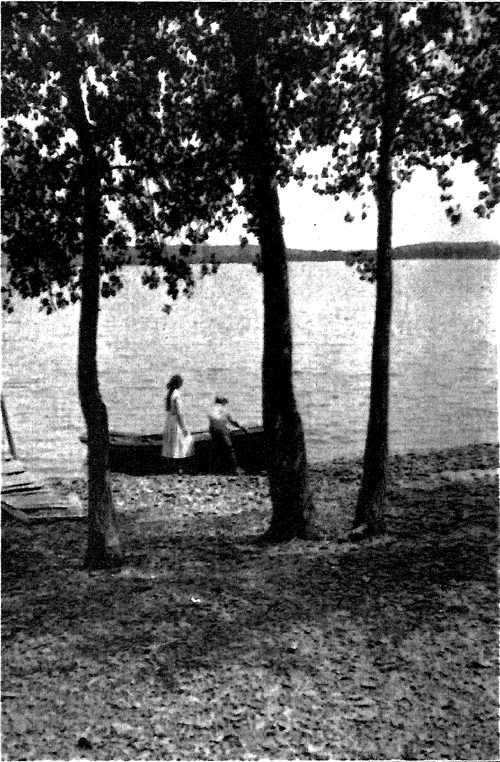

The Art Of Grouping
Description
This section is from the book "The Natural Style In Landscape Gardening", by Frank A. Waugh. Also available from Amazon: The Natural Style in Landscape Gardening.
The Art Of Grouping
LANDSCAPE gardeners, especially those of the naturalistic persuasion, have always had a suspicion that the art of grouping their plants was a very important matter. At one time and another a good deal of discussion has been given to the subject, a large part of it fruitless. Indeed the net result, after years of landscape gardening, seems very slight. The best men still appear to have vague and hazy ideas on the subject. Old practitioners have indeed fallen into working formulas of their own, but they themselves usually feel that these formulas are inadequate, while every one else can see that these set methods of grouping are more detrimental than useful. It is perhaps too much to expect that, under these circumstances, the whole art of plant grouping can now be set forth simply and effectively in a book. Yet a careful discussion of the main points must prove helpful, and the endeavor to reach a statement of principles will at least be suggestive.
It seems possible to distinguish seven different types of plant groups classified as to form. These are (1) the single specimen, (2) the group of two, (3) the group of three, (4) the larger group of five or more, (5) the row, (6) the mass, (7) the social group.
The single specimen is, strictly speaking, not a group, of course, but it demands treatment in this same connection. Early landscape gardening dealt largely in specimens. Writers often emphasized the importance of giving each individual room for complete development. Many of the old time gardens were nothing more than collections of individual specimens. This tendency toward specimen planting has not wholly disappeared. In botanic gardens it is appropriate and necessary. But in pure landscape gardening, where the idea of pictorial composition prevails, the specimen method must be curbed. The single fully developed tree, standing by itself, is an abnormality and a rarity in nature. It is, however, a rarity which is very pleasing to the human eye, and the landscape gardener may well introduce this unit with considerably greater frequency than nature does.
However, in any pictorial composition, specimens must be introduced with great restraint. It may be considered false composition to make more than one specimen visible in any one view. Perhaps it will be safe to say that any first-class specimen should be so placed as to form the culmination of a paragraph. Certainly if an individual tree is worth keeping as a specimen it must be worthy of considerable emphasis, an emphasis which it could possibly have at no other point in the composition.
The group of two seems to be habitually avoided by landscape gardeners. Yet I am convinced that this is due to an unfounded prejudice. In many years of sketching and photographing, seeking about for attractive compositions, I have repeatedly been drawn to admire two trees of a species standing faithfully together in the pasture, in the fence row or on the hillside. Indeed I can hardly think of any other unit which has so often attracted my pencil or my camera. Every one, I suppose, has a somewhat human feeling about trees, as though they possessed personalities like our own; and certainly two persons of like character always stand well together. It is the human feeling that "two is company, three is a crowd." I am sure that the works of the painters and artist photographers will show that two trees properly related have great pictorial value, and this type of grouping ought to be more frequently used by landscape planters.
The group of three, on the other hand, seems to have a special fascination for the landscape gardener, like a bright light for wild animals. Look over the planting plans and planting lists in any office, and how many hundreds of groups of three shall you find! The funny song about "The Three Trees" might have been made for their particular use. There are literally thousands of entries such as "3 Red Maple," "3 Tupelo," "3 Honey Locust," "3 Lilacs" or even "3 Hydrangea p.g".
This is, I suspect, a psychological phenomenon, but v?e need not stop now for psychological explanations. We can be sure, I believe, without such investigations, that the group of three has no such pictorial value as its strangely frequent use would imply. Indeed in purely pictorial effect I think two trees are usually better than three. And I will add one further suspicion, viz., that when three trees or shrubs compose a group it is usually better to place them in an irregular row than in an equilateral triangle, though the amateur planter has a strong tendency toward the latter figure.
The group of three ought to be used and used with considerable freedom, but it must not be conventionalized. There can be no doubt about its being too often employed. Nature herself does not hold the number sacred. She does not choose three trees for a group any oftener than two or four.
The four-tree group is practically unknown in artificial planting. Of course there is nothing in nature against this unit; but the landscape gardener seems to feel that four trees of a kind are just enough to lose their individuality without gaining the proper effect of the mass.
Five trees or shrubs, however, always appeal to the thought of the man who makes planting plans on a drawing board. The fact that some nursery catalogues quote stock by fives and tens also has its psychological effect. The feeling for odd numbers also throws its emphasis on the five. With anywhere from five to twelve, according to species, we have individuals enough to make a genuine and effective group. At this stage grouping comes to its real meaning; and it must be allowed that most planters are more successful in groups of this size than in any other scale. Perhaps this is the same as to say that in common garden and park problems this unit gives the most advantageous effect.

Continue to:
- prev: Principles Of Structural Composition. Part 3
- Table of Contents
- next: The Art Of Grouping. Part 2